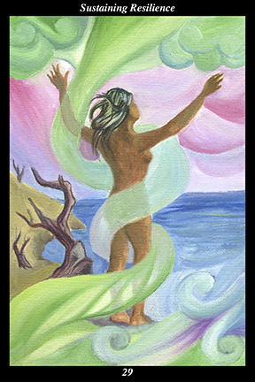

 | IMAGE A female warrior stands by the sea, facing a strong, unceasing wind. She stands naked, with her arms outstretched, allowing the wind to coil around her without resistance. Along the shore, the remains of others who have stood in that same wind are depicted as old tree stumps devoid of life. |
INTERPRETATION
This hexagram represents the inner flexibility needed to withstand external change. The sea symbolizes the vast, unknown possibilities before you. The female warrior symbolizes the way of nurturing and encouraging human nature that increases its sensitivity and loving-kindness. That she faces the wind of ever-shifting changes means that you preserve what is essential by adopting an attitude of unrelenting fluidity. That she is naked means that you are unafraid to stand exposed to the elements of change. That she stands with open arms means that you withstand change by accepting the situation and patiently waiting for it to pass. The dead trees symbolize those who attempt to resist change in the wrong way, relying on mere stubbornness and inflexibility where continued growth and adaptability are called for. Taken together, these symbols mean that inner flexibility and adaptability can be sustained forever by allowing change to pass through you like the open sky allows the wind to pass through it.
ACTION
The feminine half of the spirit warrior undergoes countless transformations in order to remain whole. When we respond to difficulties and hardship by clinging to our past conceptions of ourselves, we become rigid and resentful, eventually losing the very sense of self we sought to protect and becoming exactly the kind of person we least sought to emulate. This is a time for keeping your focus on bringing
benefit to others: just as a cloud’s appearance is constantly changed by the wind until it has poured its rain out upon the thirsty land, this is a time for letting go of past self-concepts in order to be transformed by life into a better servant of life. While many set out on this path, few follow it to the end: in order to sustain a sincere attitude of resilience year after year, it is necessary to devote yourself to something greater than yourself—to something that gives your sacrifices meaning and worth. Do not become dispirited because your ideals and vision are not widely accepted by those around you—instead, look at the lives such people are leading and ask yourself if you wish to follow in their footsteps. By increasingly taking on the nature of the wind itself, you become an ever more positive force of transformation in the world.
INTENT
In the midst of so much change, it is important not to isolate or alienate yourself from others. It is a time for establishing new alliances as well as for maintaining existing relationships wherever practicable. It is not just that you
benefit from the support and camaraderie of others at this time, but that your presence also adds significantly to their lives. In situations where the end of a relationship is part and parcel of the difficulties you face, it is essential that you not withdraw into yourself and try to withstand the turbulence by stubbornly clinging to a vision of the past: mimic the rain cloud, allow yourself to be changed by the wind of change, and find the kind of relationships where your contributions are accepted as nourishment. By holding fast to your allies, you are able to recover from hardships easily and use those experiences to bring others
benefit. By adapting to all manner of circumstances without losing your intrinsic self, you retain the suppleness of youth even as you gain the wisdom of the elder spirits.
SUMMARY
Though you are buffeted by change, you continue to grow because you do not hold rigidly to your vision of the past. Though deprived of the stability and security you would like, you continue to thrive because you do not hold rigidly to your vision of the future. In the midst of the storm, you continue to advance because you join forces with the wind. Time is your ally, change is your ally.
THE LINE CHANGES
1° Looking at matters from different perspectives is beneficial unless it paralyzes you—if you wait for the perfect plan, you will never make a decision. Trust in your ability to adjust to changing circumstances. Calculated risks lead to incalculable rewards.
2° People who overwhelm you with too much intimacy too soon are a pastime at best and a danger at worst. It is painful learning that not everyone has the generosity of spirit you have. Look for someone who has learned the same lesson—then allow matters to evolve slowly.
3° To seek intimacy out of loneliness or insecurity leads to heartache and regret. The force of your personality may overwhelm your peers for now, but their growing dependence on you will soon ensnare you. You have not yet correctly adapted to your surroundings.
4° You are able to establish strong partnerships in every aspect of your life. Others are as interested in you as you are in them—mutual regard leads to mutual
benefit. You have successfully adapted to your surroundings—do not stop trying to
benefit the people and nature around you.
5° You achieve a position of responsibility and grow comfortable making important decisions. But do not grow overconfident or complacent—consider the consequences of your decisions both before and after making them. The higher you climb the ladder, the more visible you make yourself.
6° To try to
benefit all does not mean trying to please everyone—it means envisioning the greater good and contributing to that with each thought, word, and action. Be responsible for your contribution and you succeed. Be responsible for others’ contributions and you fail.